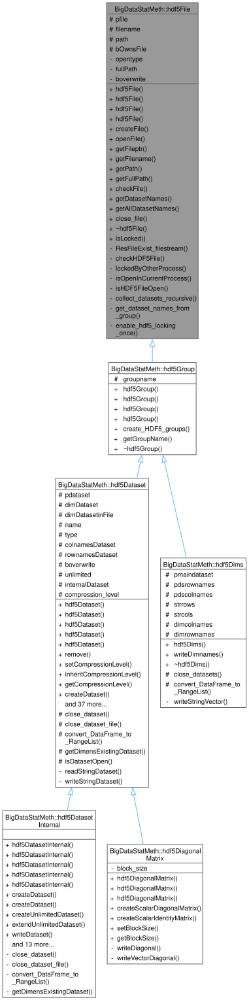

hdf5File
C++ Class Reference
1 Overview
Constructor with path and filename.
2 Detailed Description
routeDirectory path filenFilename overwriteWhether to overwrite existing file
3 Class Hierarchy

4 Public Interface
4.1 Methods
4.1.1 hdf5File()
BigDataStatMeth::hdf5File::hdf5File(H5::H5File *file)Constructor with file pointer.
Parameters:
file(H5::H5File *): HDF5 file pointer
fileHDF5 file pointer
4.1.2 createFile()
int BigDataStatMeth::hdf5File::createFile()Create a new HDF5 file.
Returns: EXEC_OK on success, EXEC_ERROR on error, EXEC_WARNING if file exists
Creates a new HDF5 file at the specified location. If the file exists and overwrite is true, it will be truncated.
4.1.3 openFile()
H5::H5File * BigDataStatMeth::hdf5File::openFile(std::string opentype)Open an existing HDF5 file.
Parameters:
opentype(std::string): Access mode (“r” for read-only, “rw” for read-write)
Returns: Pointer to opened file or nullptr on error
Opens an HDF5 file in read or read/write mode.
4.1.4 getFileptr()
H5::H5File * BigDataStatMeth::hdf5File::getFileptr()Get file pointer.
Returns: Pointer to HDF5 file
Pointer to HDF5 file
4.1.5 getFilename()
std::string BigDataStatMeth::hdf5File::getFilename()Get filename.
Returns: Filename without path
Filename without path
4.1.6 getPath()
std::string BigDataStatMeth::hdf5File::getPath()Get file path.
Returns: Directory path without filename
Directory path without filename
4.1.7 getFullPath()
std::string BigDataStatMeth::hdf5File::getFullPath()Get full file path.
Returns: Complete path including filename
Complete path including filename
4.1.8 checkFile()
bool BigDataStatMeth::hdf5File::checkFile()Check if file exists.
Returns: True if file exists, false otherwise
True if file exists, false otherwise
4.1.9 getDatasetNames()
Rcpp::StringVector BigDataStatMeth::hdf5File::getDatasetNames(std::string strgroup, std::string strprefix, std::string strsufix)Get list of dataset names.
Parameters:
strgroup(std::string): Group pathstrprefix(std::string): Prefix filterstrsufix(std::string): Suffix filter
Returns: Vector of dataset names
strgroupGroup path strprefixPrefix filter strsufixSuffix filter Vector of dataset names
4.1.10 getAllDatasetNames()
Rcpp::StringVector BigDataStatMeth::hdf5File::getAllDatasetNames(std::string strgroup, std::string strprefix, bool recursive)List datasets in a group, optionally recursing into subgroups.
Parameters:
strgroup(std::string): HDF5 group path. Use “/” for the file root.strprefix(std::string): Only return names starting with this prefix (empty = all).recursive(bool): If true, recurse into every subgroup and return full paths relative to strgroup (e.g. “SUB/dataset”).
Returns: StringVector of dataset names (or relative paths when recursive).
strgroupHDF5 group path. Use “/” for the file root. strprefixOnly return names starting with this prefix (empty = all). recursiveIf true, recurse into every subgroup and return full paths relative to strgroup (e.g. “SUB/dataset”). StringVector of dataset names (or relative paths when recursive).
4.1.11 close_file()
void BigDataStatMeth::hdf5File::close_file()Close file and cleanup resources.
Closes all open objects and the file itself. Used for emergency cleanup.
4.1.12 ~hdf5File()
BigDataStatMeth::hdf5File::~hdf5File()Destructor.
Closes the file and releases resources
5 Protected Members
5.1 Attributes
5.1.1 pfile
Type: H5::H5File *
5.1.2 filename
Type: std::string
5.1.3 path
Type: std::string
5.1.4 bOwnsFile
Type: bool
6 Private Implementation
Internal implementation details for advanced users and contributors.
6.1 Methods
6.1.1 ResFileExist_filestream()
bool BigDataStatMeth::hdf5File::ResFileExist_filestream()Check if file exists using file stream.
Returns: True if file exists and is accessible
True if file exists and is accessible
6.1.2 checkHDF5File()
bool BigDataStatMeth::hdf5File::checkHDF5File()Check if file is corrupt, open, accessible or has_valid_structure.
Returns: True if file exists and is accessible
True if file exists and is accessible
6.1.3 lockedByOtherProcess()
bool BigDataStatMeth::hdf5File::lockedByOtherProcess()Return true if existing HDF5 file appears locked/busy.
Requires HDF5 file locking enabled (env var set above).
6.1.4 isOpenInCurrentProcess()
bool BigDataStatMeth::hdf5File::isOpenInCurrentProcess()Check if file is already open in the current process.
Returns: true if this process already has the file open.
Uses HDF5 C API to enumerate all file IDs open in this process and compare their paths against fullPath. This avoids false positives from lockedByOtherProcess() when the same R session already has the file open via another HDF5Matrix object. true if this process already has the file open.
6.1.5 isHDF5FileOpen()
bool BigDataStatMeth::hdf5File::isHDF5FileOpen()Check if HDF5 file is already open.
Returns: True if file is open
True if file is open
6.1.6 collect_datasets_recursive()
void BigDataStatMeth::hdf5File::collect_datasets_recursive(const std::string &group_path, const std::string &rel_prefix, const std::string &strprefix, Rcpp::StringVector &results)Recursive helper: walk group_path and collect dataset paths.
Parameters:
group_path(const std::string &): Current group being visited.rel_prefix(const std::string &): Path prefix accumulated so far (empty at root call).strprefix(const std::string &): User-supplied name filter (empty = accept all).results(Rcpp::StringVector &): Accumulator vector — paths appended in-place.
group_pathCurrent group being visited. rel_prefixPath prefix accumulated so far (empty at root call). strprefixUser-supplied name filter (empty = accept all). resultsAccumulator vector — paths appended in-place.
6.1.7 get_dataset_names_from_group()
Rcpp::StringVector BigDataStatMeth::hdf5File::get_dataset_names_from_group(std::string strgroup, std::string strprefix, std::string strsufix)Get dataset names from group.
Parameters:
strgroup(std::string): Group pathstrprefix(std::string): Prefix filterstrsufix(std::string): Suffix filter
Returns: Vector of dataset names
strgroupGroup path strprefixPrefix filter strsufixSuffix filter Vector of dataset names
6.2 Attributes
6.2.1 opentype
Type: std::string
6.2.2 fullPath
Type: std::string
6.2.3 boverwrite
Type: bool
7 Usage Example
#include "hdf5File.hpp"
// Example usage
hdf5File obj;
// Your code here